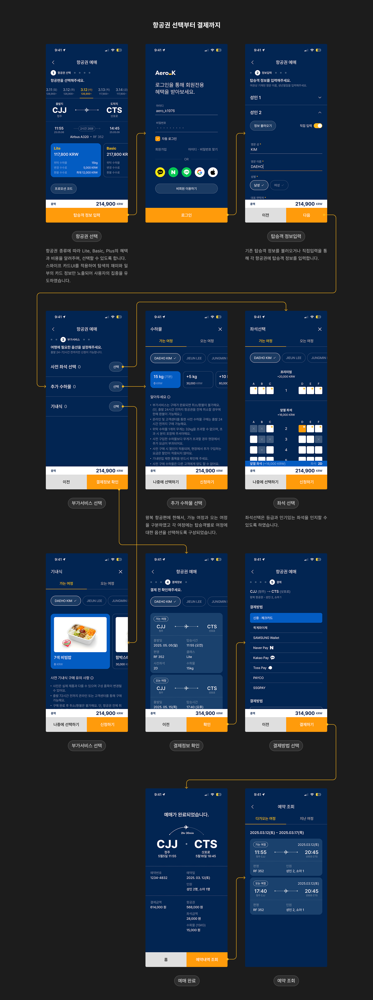

- 
Aero_K 항공, 예약앱 시안 - A
제안시안
부여된 UX 전략은 “필수 기능에 집중하고, 부가 기능의 비중을 줄인다” 였습니다.
최소한의 클릭과 최소한의 고정영역을 구현하고, 브랜드 요소를 녹여내기 위한 항공예약 시스템 시안작업 이었습니다.
 에어로케이
에어로케이- Product•RMS (항공 예약시스템)
- Date•2025. 4
부여된 UX 전략은 “필수 기능에 집중하고, 부가 기능의 비중을 줄인다” 였습니다.
최소한의 클릭과 최소한의 고정영역을 구현하고, 브랜드 요소를 녹여내기 위한 항공예약 시스템 시안작업 이었습니다.